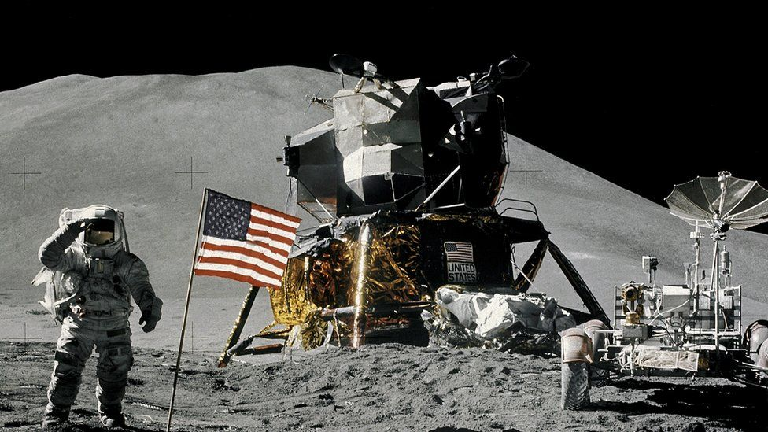
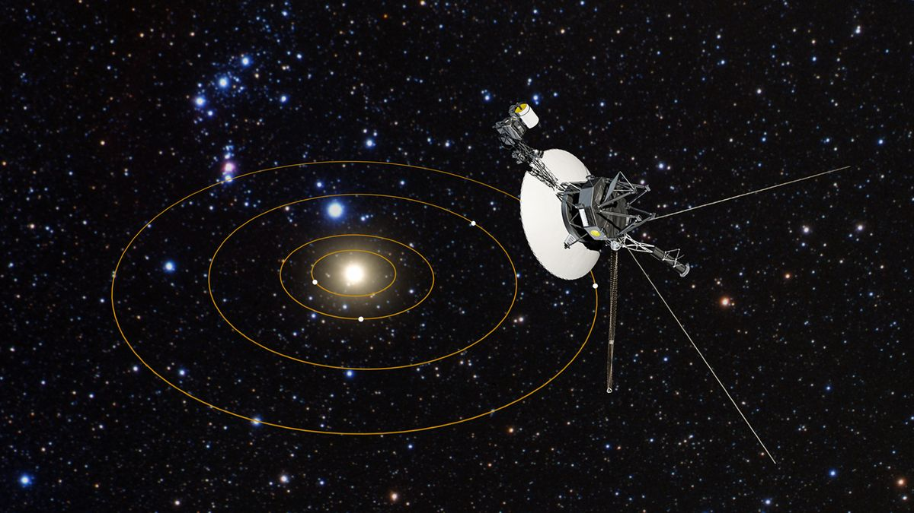
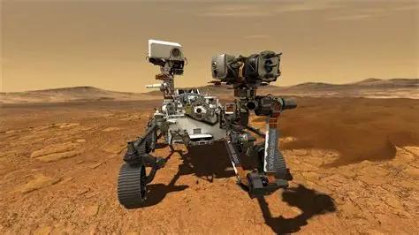
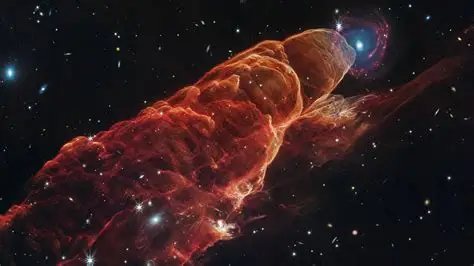

Jelajahi berbagai misi luar angkasa yang telah membantu manusia memahami alam semesta.

Apollo 11 adalah misi luar angkasa pertama yang berhasil membawa manusia ke Bulan pada tahun 1969.
Neil Armstrong menjadi manusia pertama yang menginjakkan kaki di Bulan.

Voyager 1 diluncurkan pada tahun 1977 untuk mempelajari planet-planet luar Tata Surya dan kini telah memasuki ruang antarbintang.
Voyager 1 merupakan objek buatan manusia yang paling jauh dari Bumi.

Perseverance adalah robot penjelajah Mars yang dikirim NASA untuk mencari tanda-tanda kehidupan mikroba di masa lalu.
Perseverance membawa helikopter mini bernama Ingenuity yang berhasil terbang di Mars.

James Webb Space Telescope adalah teleskop luar angkasa paling canggih yang pernah dibuat untuk mengamati alam semesta.
Teleskop ini mampu melihat cahaya dari galaksi yang terbentuk miliaran tahun lalu.